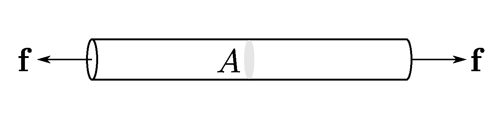

Stress vector
Contents
Stress vector#
Consider two blocks of different cross-sections. Intuitively, the blocks whose cross-section is smaller is going to deform a lot more than the other. While in rigid body mechanics, the concept of force is sufficient to describe or predict the motion of the body, in deformable bodies it is not.
{kind=link}
We will need to understand the concept of stress. The term stress (\(\sigma\)) is used to express the loading in terms of force applied to a certain cross-sectional area of an object.
From the perspective of loading, stress is the applied force or system of forces that tends to deform a body.
From the perspective of what is happening within a material, stress is the internal distribution of forces within a body that balance and react to the loads applied to it. The stress distribution may or may not be uniform, depending on the nature of the loading condition.
{kind=link}
Traction#
Simplifying assumptions are often used to represent force acting on area as traction vector - simply the force vector divided by that area.
\(\boldsymbol{T}\) has units of stress, but as it is a vector, all the usual rules for vectors apply to it.
The unit of stress is Pascal [Pa] or Newtons per square meter [\(\frac{N}{m^2}\)]. A stress of 1 Pa is very small, for example, the load due to 1m of water is about 10\(^4\) Pa. So, in geology we often use metric prefixes:
1 hPa = 10\(^2\) Pa (hektopascal)
1 kPa = 10\(^3\) Pa (kilopascal)
1 MPa = 10\(^6\) Pa (megapascal)
1 GPa = 10\(^9\) Pa (gigapascal)
Other units are bars and atm: 1 MPa = 10\(^6\) Pa = 10 bars = 9.869232667 atm
The traction is a vector quantity that acts at a point on an imaginary or real surface of arbitrary orientation.
Cauchy reciprocal theorem
The traction at a point on a surface is equal and opposite to the traction that at that same point for the same surface with opposite outward unit normal vector.

Stress components#
In general, a stress acting on a plane represented by traction \(\boldsymbol{T}^{(\boldsymbol{n})}\) may be expressed as a sum of shear and normal components.
{kind=link}
Note
Normal stress: The component of stress acting perpendicular to the plane
Shear stress: The component of stress acting parallel to the plane
The magnitude of the normal stress component \(\sigma _n\) of any stress vector \(\boldsymbol{T}^{(\boldsymbol{n})}\) acting on an arbitrary plane with normal unit vector \(n\) at a given point, in terms of the stress tensor \(\boldsymbol{\sigma}\), could be calculated a scalar projection of the stress vector onto the normal unit vector:
The magnitude of the shear stress component \(\tau_n\), acting in the plane spanned by the two vectors \(\boldsymbol{T}^{(\boldsymbol{n})}\) and \(n\), can then be found using the Pythagorean theorem:
Stress at point#
It must be noted that the stresses in most 2-D or 3-D solids are actually more complex and need be defined more methodically.
The internal force acting on a small area of a plane represented by traction vector can be resolved into normal and shear stress components. These stresses are average stresses as the area is finite, but when the area is allowed to approach zero, the stresses become stresses at a point.
Since stresses are defined in relation to the plane that passes through the point under consideration, and the number of such planes is infinite, there appear an infinite set of stresses at a point.
Fortunately, it can be proven that the stresses on any plane can be computed from the stresses on three orthogonal planes passing through the point… and tensors will help us.